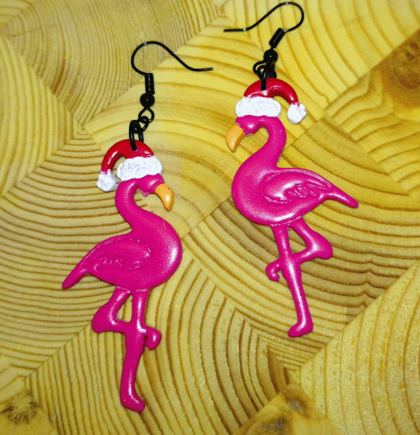
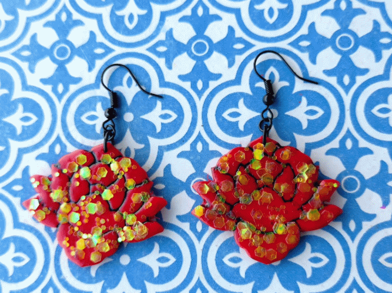
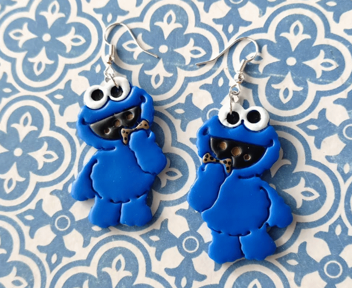
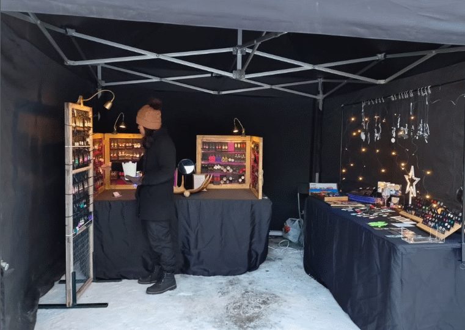
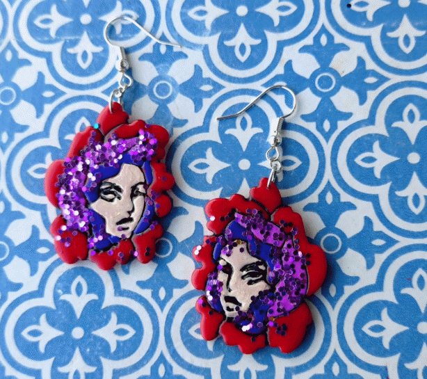
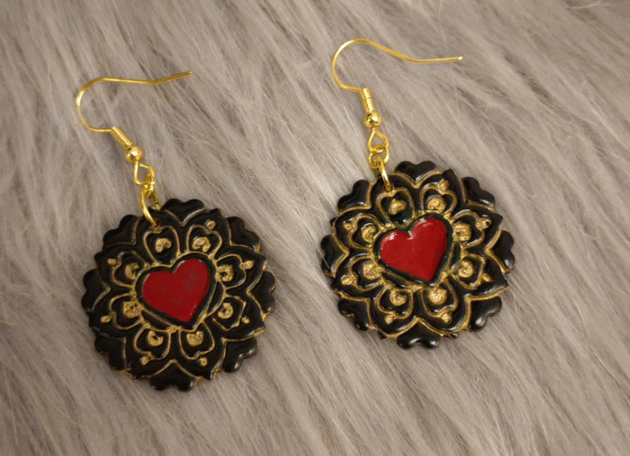
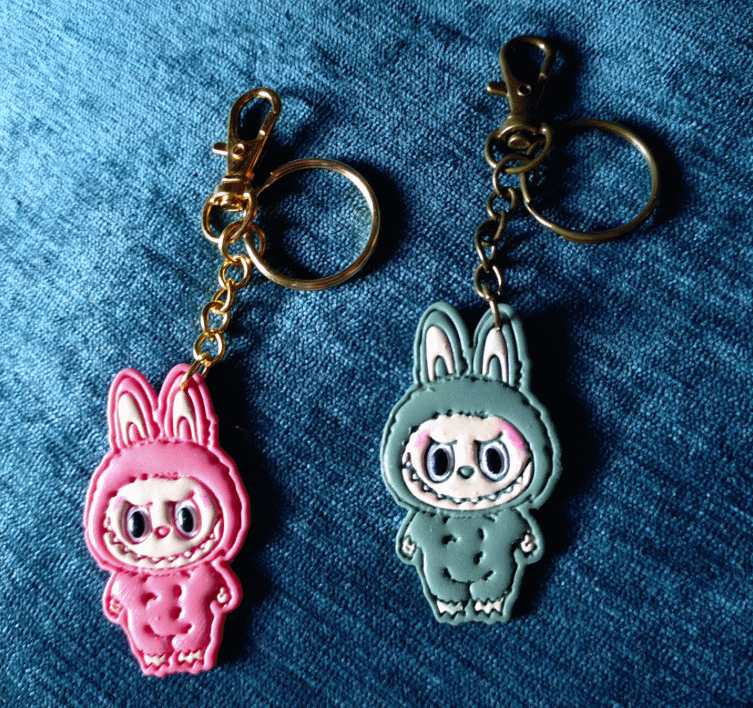
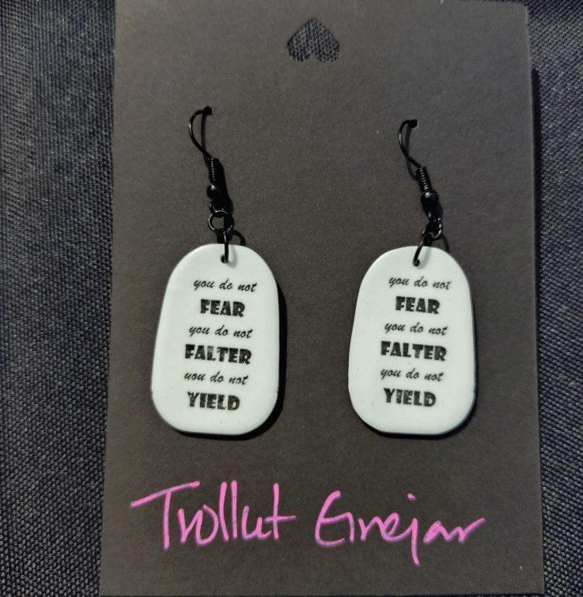
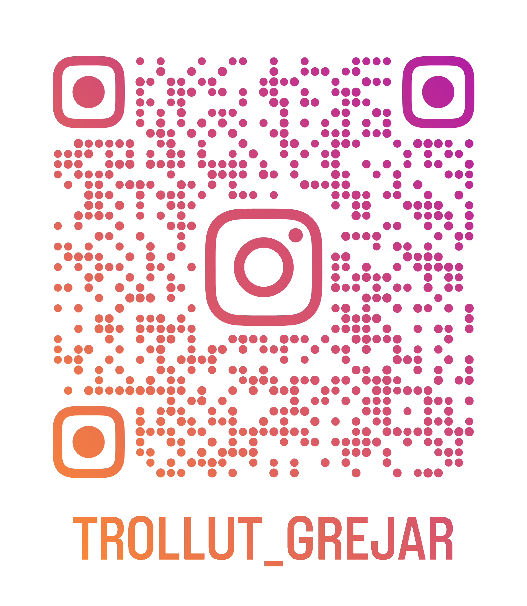

Glitterblomma
Djupröd med guldskimrande glitter i varje kronblad.
ÖrhängenHandgjort i polymerlera · Älvsbyn, Norrbotten
Varje par örhängen formas, målas och bakas för hand i en liten verkstad i Älvsbyn — under norrskenet och de långa vinterkvällarna. Inget par är det andra likt, precis som de som bär dem.




Trollut Grejar startade som ett sätt att göra något med händerna under de mörkaste månaderna i Norrbotten. Det som började som ett par örhängen till mig själv blev snart en hel liten verkstad — fortfarande i samma kök, fortfarande samma envisa kärlek till glitter och starka färger.
Varje smycke rullas, skärs och detaljmålas för hand innan det bakas hårt i ugnen. Ingen mall är den andra lik, vilket betyder att det alltid finns små, kärleksfulla ojämnheter kvar — bevis på att en människa, inte en maskin, har gjort just det paret.
"du ska inte frukta, du ska inte vackla, du ska inte ge vika" — sen tolv år tillbaka mitt käraste motto, numera ett par örhängen.
Bläddra bland smyckenaEtt axplock av vad som brukar dyka upp i verkstaden — hela sortimentet uppdateras löpande på Instagram.
Djupröd med guldskimrande glitter i varje kronblad.
Örhängen
Handmålat ansikte inramat i glittrande lila och rött.
ÖrhängenFör dig som aldrig riktigt växte ifrån barnkanalen.
Örhängen
Svart och guld med ett rött hjärta i mitten.
ÖrhängenSäsongens favorit — flamingo med tomteluva.
Örhängen
Lite läskigt söta följeslagare för nycklar och väskor.
Nyckelring
"Du ska inte frukta, vackla eller ge vika" — bär det som en påminnelse.
ÖrhängenBäst upplevs på plats — kolla marknadskalendern nedan.
MarknadTrollen gillar att gömma sig i vår lera — och ibland i webbläsaren. Fånga 8 stycken på 20 sekunder så låser du upp en riktig rabattkod.
Tryck på "Starta spelet" — sen gäller det att vara snabb på klicket!
Koden är samma för alla som klarar utmaningen — vi litar på hederssystemet (och kollar gärna en skärmdump om du är osäker 😉).
Handplockade marknader och pop-ups runt Norrbotten. Listan uppdateras löpande — hör alltid gärna av dig på Instagram om du undrar över ett datum.

Det mesta säljs faktiskt direkt i storyn innan det ens hinner läggas upp här. @trollut_grejar är där det händer.